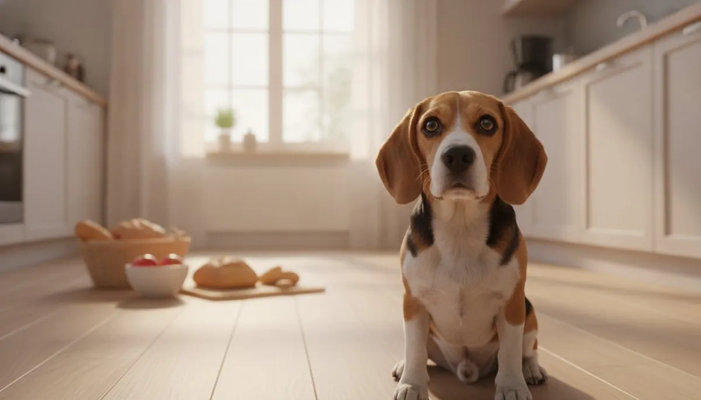

15 Human Foods Toxic to Dogs

Your kitchen is full of everyday foods that are perfectly fine for you and genuinely dangerous for your dog — and some do harm in surprisingly small amounts. Here are the 15 to keep well out of reach, how serious each one is, the warning signs to watch, and exactly what to do if your dog gets into something.
Call your vet or a pet poison helpline right away: ASPCA Animal Poison Control 888-426-4435 or Pet Poison Helpline 855-764-7661. Have your dog's weight, what and how much was eaten, and the time ready. Don't induce vomiting unless a professional tells you to.
📄 Free printable PDF — toxic-foods wallet card
The 15 most dangerous foods
1. Chocolate Severe
Theobromine and caffeine build to toxic levels because dogs clear them so slowly. Dark and baking chocolate are the worst; milk chocolate less so.
Signs: vomiting, restlessness, racing heart, tremors, seizures.
Full guide + chocolate calculator →2. Grapes & 3. Raisins Severe
Can cause sudden kidney failure even in small amounts, and the reaction is unpredictable — raisins are even more concentrated than fresh grapes.
Signs: vomiting, lethargy, reduced or no urination.
Grapes → Raisins →4. Onion & 5. Garlic & 15. Leek Severe
The whole allium family damages red blood cells and causes anemia — in every form (raw, cooked, powdered). Garlic is several times more potent than onion.
Signs (often delayed a day+): weakness, pale gums, reddish urine.
Onion → Garlic → Leek →6. Xylitol Severe
This sugar-free sweetener (in gum, candy, some peanut butters) is one of the fastest-acting poisons for dogs — a tiny amount triggers a blood-sugar crash and liver damage.
Signs (15–60 min): sudden weakness, collapse, seizures.
Full guide →7. Coffee & caffeine Severe
Coffee, tea, energy drinks and especially grounds and pills over-stimulate the heart and nervous system.
Signs: hyperactivity, racing heart, tremors.
Full guide →8. Alcohol Severe
Toxic in any amount — and it hides in raw bread dough, fermenting fruit and unattended drinks. Dogs are far smaller and far more sensitive than us.
Signs: wobbliness, vomiting, slowed breathing.
Full guide →9. Macadamia nuts High
Cause a specific, well-documented reaction in dogs affecting the muscles and nervous system — even a small handful can do it.
Signs (~12 h): hind-leg weakness, tremors, fever.
Full guide →10. Star fruit High
Contains compounds that can affect the kidneys — best kept off the menu entirely.
Signs: drooling, weakness, reduced urination.
Full guide →11. Nutmeg High
Contains myristicin, which affects the nervous system and heart in larger amounts (a tiny baking trace is low-risk; eggnog and straight nutmeg are not).
Signs: disorientation, racing heart, tremors.
Full guide →12. Salt High
Large amounts at once (chips, jerky, homemade salt dough, seawater) cause sodium poisoning that affects the brain and kidneys.
Signs: heavy thirst, vomiting, wobbliness, tremors.
Full guide →13. Cooked bones High
Not a poison but a serious physical hazard — cooked bones splinter and can cause choking, mouth injuries or a punctured gut.
Signs: gagging, drooling, retching, blood, distress.
Full guide →14. Raw bread dough High
A double danger: it keeps rising in the warm stomach (painful bloat) and the fermenting yeast produces alcohol.
Signs: swollen belly, retching, drooling, wobbliness.
Full guide →What to give instead — safe swaps
Want to share something from the kitchen? These are genuinely good, vet-approved treats — tap any to see the safe amount:
Frequently asked questions
How much chocolate is toxic to a dog?
It depends on the type and your dog's size — dark and baking chocolate are dangerous in small amounts, milk chocolate less so. Our chocolate calculator gives an instant estimate.
My dog ate one grape — should I worry?
Possibly. Because the reaction is so unpredictable, even one or two can be a problem for some dogs. Call a poison line with your dog's weight rather than waiting.
Which of these acts the fastest?
Xylitol — signs can appear within 15–60 minutes. Treat any "sugar-free" product ingestion as an immediate emergency.
What's the very first thing I should do?
Call your vet or a poison line (ASPCA 888-426-4435 / Pet Poison Helpline 855-764-7661) with the details — and don't induce vomiting unless they tell you to. Our emergency tool walks you through it.
🧊 Get the free Pet Food Fridge Guide
A printable checklist of 50+ foods your dog & cat can and can't eat — plus seasonal pet-safety tips. No spam, unsubscribe anytime.